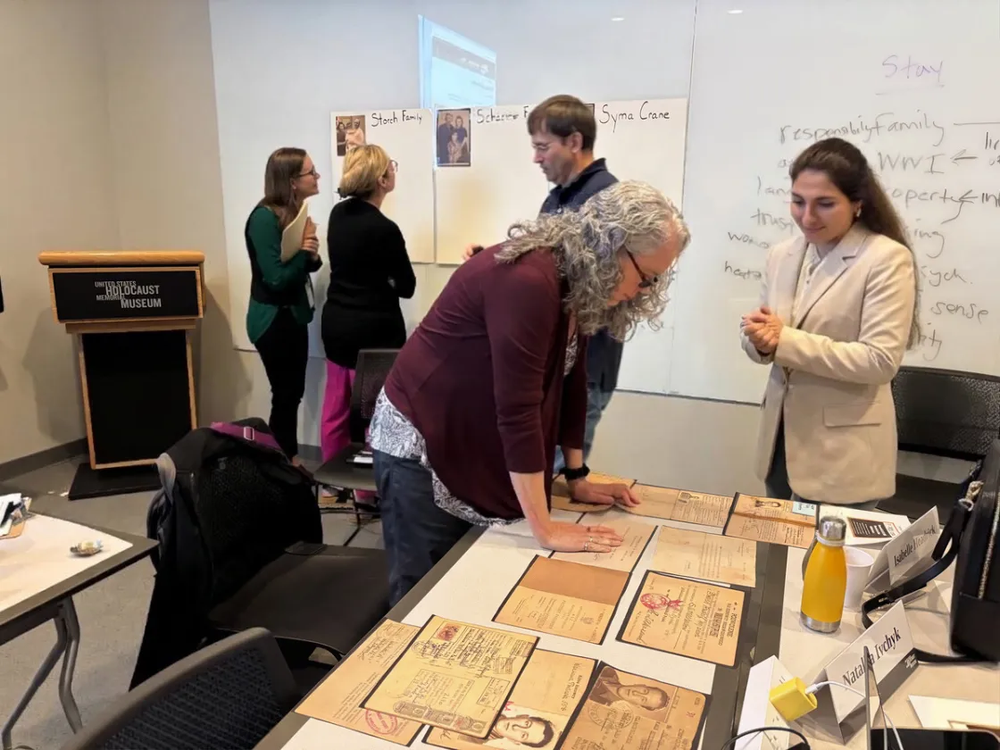

My research examines indirect forms of Holocaust representation: the place of silence and absence in literature and film, the history of Iran’s Jews and the refugees who passed through Iran, and how testimony changes as it moves between languages.
My work draws on archival research, close reading, oral history and translation. One question runs through it: what can literature and film convey about violence when direct representation risks the illusion of complete knowledge? Below are three current projects, and the work that has grown around them.
Project 01 · Book manuscriptManuscript complete · in preparation for publication
The Rhetoric of Obliquity: Anna Langfus, Holocaust Cinema, and the Ethics of Indirection
When does indirection preserve the difficulty of catastrophe, and when does it shield a narrator, an artist, or an audience from knowledge?
Anna Langfus, a Polish-Jewish survivor, wrote three French-language novels and received the Prix Goncourt in 1962, yet she remains marginal in Anglophone histories of Holocaust literature. The book reads her as both the inventor of a literary obliquity and its first serious critic, then follows the problems she formalized into film.
Its central claim is that silence and restraint are not inherently ethical: their force depends on what a work withholds, from whom, and why.
Developed from the dissertation Representing the Holocaust in Novels and Films: Anna Langfus and Six Directors (University of Connecticut, 2025), advised by Roger Célestin.
Project 02 · Archival projectArchival research in progress
Classified Between: An Iranian Jewish Student in Vichy France, 1941–1944
How did Vichy institutions classify foreign Jews, and when did those classifications enter decisions about their lives?
The project follows Menashe Ezrapour, a Jewish engineering student from Hamadan, through French police and internment records, a 1941 French-language diary held by the United States Holocaust Memorial Museum, and his later testimony. It does not assume that Iranian nationality protected him; it asks how different offices made nationality legible and actionable.
In August 2026 I worked with the Museum’s French police microfilm (RG-43.016M) at the Shapell Center and collected several hundred French administrative records.

Working with archival documents, Curt C. and Else Silberman Faculty Seminar, United States Holocaust Memorial Museum, June 2025.The Tomb of Esther and Mordechai in Hamadan, Menashe Ezrapour’s home city and a centre of Iranian Jewish life. Photo: Adam Jones, CC BY-SA 2.0, via Wikimedia Commons.
Project 03 · MethodOngoing
Machine Translation and Holocaust Testimony
A translation may preserve dictionary meaning while resolving a hesitation, euphemism, or ambiguity that matters to the testimony.
I compare human and machine translation of Persian- and French-language Holocaust testimony. Original and translated passages are aligned, shifts in agency and uncertainty are annotated, and each interpretive claim is checked against the source.
Presented at the POLIN Museum’s “Confronting Holocaust Distortion” conference, Warsaw, November 2025.
What a correct translation can lose
Two examples from my 2025 talk at the POLIN Museum, Warsaw.
Original
Machine translation
What the reader loses
Ruthy a ensuite été envoyée en Pologne et elle a disparu.Source: Yad Vashem, Children in the Holocaust exhibition
Ruthy was then sent to Poland and she disappeared.
In French Holocaust discourse, “elle a disparu” means killed after deportation. An English reader hears only that her whereabouts are unknown.
منشه را … جابهجا میکردندSource: IranWire, testimony of Menashe Ezrapour
Menashe was moved between various labor camps.
The Persian sentence has an implicit subject: they moved him. The passive English drops the question of who moved him, and why.
Beyond the three projects
Other work
Second research strand
Displacement in French-language writing and art
Négar Djavadi’s fiction and Zineb Sedira’s work: how migration and colonial histories enter French-language narrative while remaining distinct from Holocaust testimony.
Article in development
Subtitles in Ida and The Zone of Interest
What an English subtitle track contributes to two Holocaust films, and where subtitle analysis stops being evidence.
Essay · TASI 2026
Out of Tehran: Revolutionary Legibility and the Aesthetics of Revolt, 1967–1979
How an Iranian revolutionary image became legible within a European radical-left grammar, read through Foucault and Genet.
Workshop paper · USHMM 2026
Fragile Negotiation and Ethical Contraction
Interaction, silence, and the contraction of social life in Gurs, Les Milles, and Bergen-Belsen.
Method
Approach
As a reader I ask what a passage rests on, and where it moves from the source to the interpretation.
My attention to the difference between silence imposed by power and silence that preserves a difficult truth is informed in part by my formation in Persian literary traditions of coded and indirect speech. That perspective does not equate Iranian histories with the Shoah; it sharpens the question of whose silence is being interpreted, under what conditions, and to what end.
What connects my projects is a method: attending to what texts, records, and translations allow us to know, and to what their forms make difficult to know. It joins close reading, archival research, and careful computational comparison.
Areas and methods
Holocaust and genocide studiesIranian Jews in wartime FranceVichy internment, nationality, and minority statusTestimony and oral historyFrench and Francophone literature and filmTranslation studies and digital humanitiesArchival research (USHMM French police microfilm)Close reading and film analysisFrench/Persian source analysis and testimony comparison